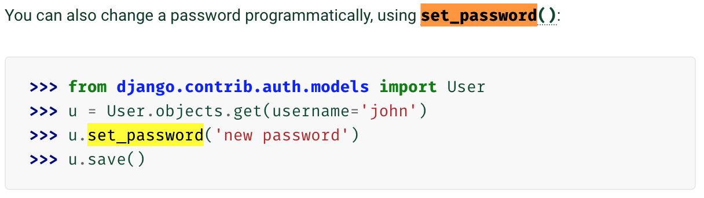

Django Week 4 Exercise
ก่อนทำโจทย์ควรดูคลิป https://youtu.be/vepQk-5MQrc และ https://youtu.be/6CD5fk5b0kk
โจทย์
-
สร้าง Admin page สำหรับ Comment โดยมีขั้นตอนดังนี้
-
1.1 แก้ไข
class Comment ใน polls/models.py โดยเพิ่ม ForeignKey ไปยัง
Poll
-
1.2 สร้าง admin page สำหรับ Comment ให้มีหน้าตาดังนี้
- แสดงข้อมูล Title, Email, Tel และชื่อ Poll
- มีช่อง searchbox สำหรับค้นหา comment ด้วย title
- สามารถ Filter ได้ด้วย Poll
-
สร้าง Page สำหรับ การเปลี่ยน password
-
เพิ่ม path ใน
polls/urls.py
-
เพิ่ม views ใน
polls/views.py (ต้องเป็น login required)
-
สร้างไฟล์
polls/templates/polls/change_password.html
-
สร้าง
ChangePasswordForm ใน polls/forms.py
และ แสดงผลให้ได้ดังรูป
-
ChangePasswordForm ต้องมีการ validate data ดังนี้
- รหัสผ่านใหม่ต้องมีตัวอักษรมากกว่า 8 ตัวอักษร
- "รหัสผ่านใหม่" กับ "ยืนยันรหัสผ่าน" ต้องเหมือนกัน
-
ถ้ารหัสผ่านเก่าถูกต้อง และ รหัสผ่านใหม่ผ่านการ validation (ข้อ 5) ให้บันทึกรหัสผ่านใหม่ โดยใช้
set_password() ตามตัวอย่างด้านล่าง

-
สร้าง Page สำหรับการ Register User ใหม่
-
ข้อมูลที่รับจาก User คือ
- username
- password
- email
- LINE ID
- Facebook
- เพศ
- วันเกิด
เราจำเป็นต้องทำการ Extend User Model ของ Django โดยการสร้าง model ใหม่และโดยให้มีความสัมพันธ์แบบ
One to One กับ Django User Model
ใน polls/models.py เพิ่ม class Profile
-
เพิ่ม path ใน
polls/urls.py
-
เพิ่ม views ใน
polls/views.py
-
สร้างไฟล์
polls/templates/polls/register.html
-
สร้าง
RegisterForm ใน polls/forms.py และแสดงผลดังรูป
-
RegisterForm จะต้องมี validation ดังนี้
- อีเมล์ ถูกต้องตาม format
- รหัสผ่าน ต้องมีความยาวอย่างน้อย 8 ตัวอักษร
- รหัสผ่าน และ ยืนยันรหัสผ่าน ต้องเหมือนกัน
- ต้องเลือกเพศ
- LINE ID, Facebook, วันเกิด จะกรอกหรือไม่กรอกก็ได้
-
บันทึกข้อมูลที่ถูก submit ลงใน database